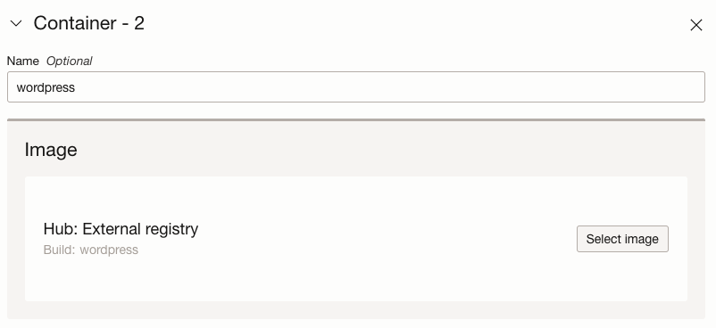

6.1 Container Instances로 컨테이너 배포하기
OCI Container Instances
컨테이너 애플리케이션을 사용하기 위해 Container Orchestration으로 일반적으로 쿠버네티스를 많이 사용합니다. 또는 가상머신에 Docker 엔진을 직접 설치하여, 컨테이너를 간단하게 구동시킬 수도 있습니다. 이때 쿠버네티스 또는 Docker 엔진 등을 사용자가 관리해 주어야 합니다. Container Instances는 Container Orchestration을 사용자가 관리하지 않고, 클라우드 서비스 제공자가 관리합니다. 사용자는 간단하게 컨테이너를 배포해서 사용할 수 있고, 컨테이너가 직접 사용하는 자원에 대한 비용만 드는 장점이 있습니다.
하나의 호스트를 가상화해서 VM간 독립된 환경을 제공하는 것과 동일하게, 하나의 호스트를 가상화해서 Container Instance를 위한 독립된 환경을 제공하여, Container Instance에서 Container Runtime 환경을 제공하고, OCI에서 관리하게 됩니다. 사용자는 Container Instance에서 실행할 컨테이너만 관리하면 됩니다. 상세한 내부 동작은 OCI First Principles video blog post을 참조하기 바랍니다.
OCI Container Instances의 GA 블로그 내용에서 보듯이 독립적으로 배포해서 사용할 수 있는 오픈소스 패키지 솔루션을 배포해서 사용할 때 좋지 않을 까 생각듭니다.
-
참조
워드프레스, MySQL 컨테이너로 배포하기
Container Instances 서비스를 통해 컨테이너 애플리케이션을 배포할 수 있습니다.
현재 GA가 2022년 12월 버전기준 Persistent Volume을 지원하지 않습니다. Container Instance를 재시작하게 되면, 데이터가 저장되지 않아, 워드프레스 초기 설치부터 다시 진행하게 됩니다.
Persistent Volume은 추후 지원예정이라고 합니다.
-
OCI 콘솔에 로그인합니다.
-
좌측 상단 햄버거 메뉴에서 Developer Services > Containers & Artifacts > Container Instances 로 이동합니다.
-
생성을 위해 Create container instance 버튼을 클릭합니다.
-
기본 생성정보를 입력을 입력합니다.
-
Name: 예) wordpress
-
Compartment: 사용할 Compartment 선택
-
Placement: 인스턴스가 위치할 Availability Domain와 Fault Domain을 선택할 수 있습니다. 단일 AD기준으로 기본값을 사용합니다.
-
Shape:
- Container Instance를 위해 제공하는 Shape을 선택합니다. Flex 유형으로 원하는 OCPU와 메모리 크기를 선택할 수 있습니다. Container Instance내의 컨테이너들이 사용할 자원의 합으로 여기서는 워드프레스와 MySQL 두 컨테이너가 사용하게 됩니다.
- 2 OCPU, 8 GB 메모리를 선택합니다.
-
Networking
-
컨테이너 인스턴스가 위치할 VCN과 Subnet을 선택합니다. 여기서는 테스트를 위해 Public Subnet을 선택하고, Public IP를 할당합니다.
-
Show advanced options에서 네트워크 고급 설정이 가능합니다. 컨테이너 인스턴스를 내부 네트워크에서 접근할 때 사용할 Private IP와 Private 도메인 이름을 설정할 수 있습니다. 해당 내용으로 내부 DNS Zone에 등록됩니다.
-
화면 제일 아래의 Show advanced options을 클릭하여 추가적인 고급 설정을 지정할 수 있습니다. 컨테이너가 종료할때 대기하는 Graceful shutdown timeout과 Container Restart Policy를 설정할 수 있습니다.
-
-
-
Next를 클릭합니다
-
Container Instance내에서 실행할 컨테이너 정보를 입력합니다.
-
첫번째 컨테이너로 MySQL 컨테이너 정보를 입력합니다.
-
Name: 예) mysql
-
Image: Select Image를 클릭합니다.
-
OCIR과 외부 컨테이너 레지스트리를 지원합니다. 외부 레지스트리의 기본 서버는 Docker Hub입니다. 아래와 같이 이미지 이름과 태그를 이용해서 MySQL 이미지를 가져옵니다.

-
-
Environmental variables: 사용하는 MySQL 컨테이너 이미지에서 제공하는 환경변수 값 중에서 데이터베이스 설치하기 위해 필요한 아래변수들을 추가합니다.
Key Value MYSQL_DATABASE wordpress MYSQL_ROOT_PASSWORD wordpressonmysql MYSQL_USER wordpress MYSQL_PASSWORD wordpress -
Show advanced options을 클릭하여 추가적인 고급 설정을 지정할 수 있습니다.
-
Resources
Container Instance안에 컨테이너가 여러개가 있는 경우, 하나의 컨테이너가 자원을 일방적으로 사용하지 않도록, Throttling을 설정할 수 있습니다. 직접 OCPU, Memory를 지정하거나, 아래 그림과 같이 백분율을 설정할 수 있습니다. 여기서는 둘다 50%를 입력합니다.
-
Startup Options
컨테이너 시작시 사용할 값들을 설정할 수 있습니다. MySQL 8부터 기본 인증방식이 변경되어, 여기서는 편의상 기존 암호방식을 사용하기 위한 ENTRYPOINT 값을
--default-authentication-plugin=mysql_native_password을 추가합니다.
-
-
-
+ Add container를 클릭하여 두번째 컨테이너를 추가합니다.
-
두번째 컨테이너로 wordpress 컨테이너 정보를 입력합니다.
-
Name: 예) wordpress
-
Image:
Select Image를 클릭하여 앞서와 동일하게 외부 레지스트리인 Docker Hub에서 가져옵니다. 이미지 이름만 wordpress로 입력합니다. 태그가 없는 경우 태그는 기본값으로 latest를 사용합니다.

-
Environmental variables:
사용하는 MySQL 컨테이너 이미지에서 제공하는 환경변수 값 중에서 데이터베이스 설치하기 위해 필요한 아래변수들을 추가합니다. Container Instances내에 여러 컨테이너가 있을 경우, CPU, Memory를 공유하며, 네트워크도 함께 공유합니다. 그래서 WORDPRESS_DB_HOST를 127.0.0.1로 해도 앞서 만든 MySQL 컨테이너로 접근이 가능합니다.
Key Value WORDPRESS_DB_HOST 127.0.0.1 WORDPRESS_DB_NAME wordpress WORDPRESS_DB_USER wordpress WORDPRESS_DB_PASSWORD wordpress -
Show advanced options을 클릭하여 추가적인 고급 설정을 지정할 수 있습니다.
-
Resources
두번째 컨테이너도 Throttling을 설정합니다. 아래 그림과 같이 나머지 50%로 백분율을 지정합니다.
-
-
-
Next를 클릭합니다
-
입력한 모든 정보를 확인하고 Create 버튼을 클릭하여 Container Instance를 생성합니다. Wordpress와 Wordpress가 사용할 MySQL까지 두개의 컨테이너가 하나의 Container Instance로 생성하게 됩니다.
-
수초가 지나면 금방 Container Instance가 아래와 같이 생성됩니다. 생성된 Wordpress의 Public IP를 확인합니다.
-
접속을 위해서는 Container Instance가 사용하는 Security List에 인터넷에서 80 포트로 접근할 수 Ingress에 미리 등록해야 합니다.
Stateless Source IP Protocol Source Port Range Destination Port Range Description No 0.0.0.0/0 TCP All 80 Wordpress -
Public IP로 접속하면 Wordpress 초기 설치화면을 볼 수 있습니다.
모니터링 & 로그 확인하기
-
Container Instance 상세화면에서 왼쪽 아래 Resources > Metrics 에서 사용하고 있는 CPU, Memory 및 스토리지 메트릭 정보를 볼 수 있습니다.
-
Containers 탭으로 이동하면, 배포된 컨테이너들을 확인할 수 있습니다. 자원 또한 전체 할당한 OCPU, Memory를 설정한대로 50% 씩 할당된 것을 볼 수 있습니다.
-
첫번째 있는 wordpress 컨테이너를 클릭하여 상세 화면으로 이동합니다.
-
컨테이너 내 메뉴에서 View logs 를 통해 컨테이너 로그를 확인할 수 있습니다.
이 글은 개인으로서, 개인의 시간을 할애하여 작성된 글입니다. 글의 내용에 오류가 있을 수 있으며, 글 속의 의견은 개인적인 의견입니다.